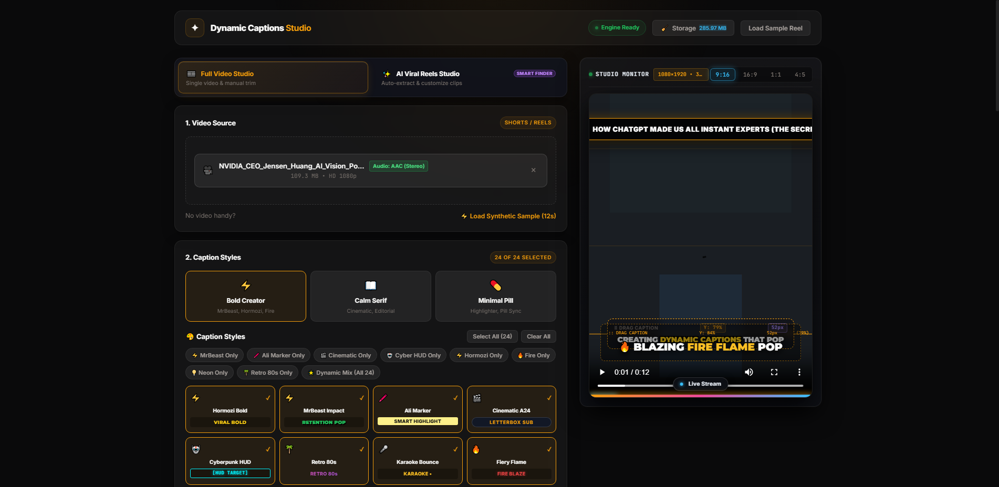
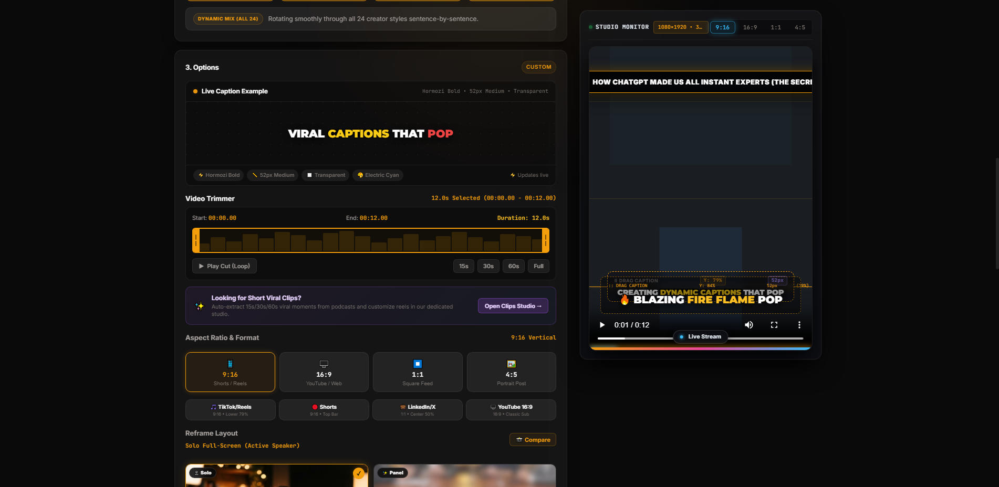

A comprehensive walkthrough of every screen in VibeCut AI, documenting how video ingestion, speech dynamics scanning, AI virality scoring, and 9:16 computer vision reframing operate.
01 Video Ingestion & Stream Multiplexer
Automatic probing of container streams, audio track validation, YouTube DASH video auto-detection, and aspect ratio configuration.
FFprobeAudio: AAC (Stereo)109.3 MB

DASH Video Auto-DetectionDetects silent 1080p/4K YouTube stream downloads and provides a 2-second multiplexing audio merger.
Stream Codec VerificationInspects audio channels, sample rate, and codec (e.g. AAC) before starting transcription.
Aspect Ratio TargetingSelects Shorts/Reels (9:16), YouTube (16:9), or Square Feed (1:1) with platform-specific safe-zone presets.
02 Dual-Handle Waveform Trimmer & Aspect Ratios
CapCut-inspired audio waveform visualizer with millisecond precision dual-handles, quick-cut jumps, and platform safe-zones.
Waveform VisualizerDual Handles15s / 30s / 60s / Full

Dynamic Volume WaveformsDisplays acoustic energy peaks and silence breaks to pinpoint punchy speech sections.
Millisecond Dual HandlesDraggable boundary handles for exact trimming without needing an external NLE.
Platform Safe ZonesAutomatic caption positioning according to TikTok, Instagram Reels, and YouTube Shorts UI overlays.
03 Computer Vision 9:16 Reframe Layout Modal
Side-by-side photo comparison of OpenCV YuNet face-detection layouts for re-framing landscape video into vertical reels.